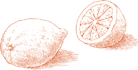
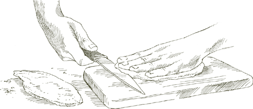
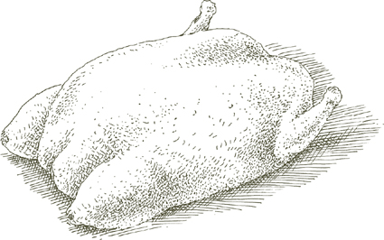

IЭТО БЫЛО название натюрморта может быть «Курица с двумя лимонами». Это все, что в нем есть. Никакого жира для приготовления, никакой намазы, никакой начинки, никаких приправ, кроме соли и перца. После того, как вы поставили курицу в духовку, переверните ее только один раз. Птица, два лимона и духовка сделают все остальное. Снова и снова, на протяжении многих лет, я встречаю людей, которые подходят ко мне и говорят: "Я Я приготовил курицу с двумя лимонами, и это самый удивительно простой рецепт, самая сочная и вкусная курица, которую я когда-либо пробовал». И знаете, это совершенно верно.
На 4 порции
Курица весом от 3 до 4 фунтов
Соль
Черный перец, свежемолотый с мельницы
2 довольно маленьких лимона
1. Разогрейте духовку до 350°.
2. Курицу тщательно вымойте в холодной воде как внутри, так и снаружи. Удалите все свисающие кусочки жира. Дайте птице посидеть минут 10 на слегка наклоненной тарелке, чтобы из нее стекала вся вода. Тщательно промокните его тряпкой или бумажными полотенцами.
3. Посыпьте курицу щедрым количеством соли и черного перца, растирая пальцами по всему телу и внутри.
4. Лимоны вымойте в холодной воде и обсушите полотенцем. Смягчите каждый лимон, положив его на стол и катая вперед и назад, сильно нажимая на него ладонью вниз. Проткните лимоны как минимум в 20 местах каждый, используя прочную круглую зубочистку, иголку, остроконечную вилку или аналогичный предмет.
5. Поместите оба лимона в полость птицы. Закройте отверстие зубочистками или с помощью вязальной иглы и веревки. Закройте его хорошо, но не делайте это абсолютно герметично, потому что курица может лопнуть. Пропустите кухонную веревку от одной штанины к другой, завязав ее на обоих концах суставов. Оставьте ноги в естественном положении, не стягивая их сильно. Если кожа не повреждена, курица во время приготовления раздуется, а веревка служит только для того, чтобы бедра не разошлись и не раскололи кожу.
6. Положите курицу в форму для запекания грудкой вниз. Не добавляйте никакой кулинарный жир. Эта птица умеет самостоятельно наметывать, поэтому не бойтесь, что она прилипнет к сковороде. Поместите его в верхнюю треть разогретой духовки. Через 30 минут переверните курицу грудкой вверх. Переворачивая его, старайтесь не проколоть кожу. Если курица останется нетронутой, она раздуется, как воздушный шар, и позже ее презентация на столе будет эффектной. Однако не беспокойтесь об этом слишком сильно, потому что даже если он не набухнет, вкус от этого не пострадает.
7. Готовьте еще 30–35 минут, затем поверните термостат духовки на 400° и готовьте еще 20 минут. Рассчитайте общее время приготовления каждого фунта от 20 до 25 минут. Переворачивать курицу повторно не нужно.
8. Независимо от того, раздулась ваша птица или нет, поднесите ее к столу целиком и оставьте внутри лимоны, пока ее не разрежут и не откроют. Вытекающие соки очень вкусные. Обязательно выложите их на ломтики курицы. Лимоны сморщятся, но в них еще останется сок; не сжимайте их, они могут брызгать.
Предварительное примечание  Если вы хотите съесть его, пока он теплый, планируйте съесть его сразу же, как только вытащите из духовки. Если остались остатки, они будут очень вкусными в холодном виде, пропитанные кулинарным соком, и их можно будет есть не прямо из холодильника, а при комнатной температуре.
Если вы хотите съесть его, пока он теплый, планируйте съесть его сразу же, как только вытащите из духовки. Если остались остатки, они будут очень вкусными в холодном виде, пропитанные кулинарным соком, и их можно будет есть не прямо из холодильника, а при комнатной температуре.
На 4 порции
Курица весом 3½ фунта
2 веточки свежего розмарина ИЛИ 1 чайная ложка сушеных листьев с горкой
3 зубчика чеснока, очищенных
Соль
Черный перец, свежемолотый с мельницы
2 столовые ложки растительного масла
1. Разогрейте духовку до 375°.
2. Вымойте курицу внутри и снаружи холодной водой и тщательно промокните тканью или бумажными полотенцами.
3. Положите одну из свежих веточек розмарина или половину сушеных листьев в полость птицы вместе со всем чесноком, солью и перцем.
4. Натрите кожу курицы 1 столовой ложкой масла, посыпьте солью и перцем. Оборвите листья с оставшейся веточки розмарина и посыпьте ими птицу или посыпьте оставшимися сушеными листьями. Поместите курицу вместе с оставшейся столовой ложкой масла в форму для запекания и поставьте на среднюю решетку разогретой духовки. Каждые 15 минут переворачивайте и поливайте его жиром и кулинарным соком, которые собираются на сковороде. Готовьте до тех пор, пока бедро не станет очень мягким, если его протыкать вилкой, и мясо будет легко отделяться от кости, около 1 часа или больше.
5. Переложите курицу на теплое сервировочное блюдо. Наклоните форму для запекания и удалите ложкой весь жир, кроме небольшого количества. Поставьте кастрюлю на плиту, включите сильный огонь, добавьте 2 столовые ложки воды и, пока она закипает, деревянной ложкой соскоблите остатки кулинарии, прилипшие ко дну. Полейте курицу соком из сковороды и сразу подавайте.
На 4 порции
1 столовая ложка сливочного масла
2 столовые ложки растительного масла
Курица весом 3,5 фунта, разрезанная на 4 части.
2 или 3 зубчика чеснока, очищенных
1 веточка свежего розмарина, разломанная на две части, ИЛИ ½ чайной ложки сушеных листьев розмарина.
Соль
Черный перец, свежемолотый с мельницы
½ стакана белого сухого вина
1. Положите сливочное и растительное масло в сотейник, включите средний огонь и, когда пена масла начнет спадать, выложите куриные четвертинки кожей вниз.
2. Хорошо обжарьте курицу с обеих сторон, затем добавьте чеснок и розмарин. Готовьте чеснок до тех пор, пока он не станет бледно-золотистого цвета, добавьте соль, перец и вино. Дайте вину быстро покипеть около 30 секунд, затем отрегулируйте огонь так, чтобы оно варилось на медленном огне, и накройте кастрюлю крышкой, слегка приоткрыв ее. Готовьте до тех пор, пока бедро птицы не станет очень мягким, если его протыкать вилкой. мясо легко отделяется от костей, в среднем на фунт уходит от 20 до 25 минут. Если во время приготовления курицы вы обнаружите, что жидкости в кастрюле стало недостаточно, пополните ее 1 или 2 столовыми ложками воды по мере необходимости.
3. Когда все будет готово, переложите курицу на теплое сервировочное блюдо с помощью шумовки или лопаточки. Удалите чеснок из сковороды. Наклоните сковороду, сняв ложкой весь жир, кроме небольшого количества. Увеличьте огонь до сильного и выкипятите воду, одновременно разрыхляя остатки готовки со дна и боков деревянной ложкой. Полейте курицу соком из сковороды и сразу подавайте.
Каччиатора означает охотничий стиль, и поскольку почти в каждом итальянском доме всегда был охотник, каждый итальянский повар готовит блюдо, претендующее на это описание. Делая щедрую скидку на бесчисленные изменения в блюдах, которые идут мимо Каччиатора название, то, из чего они обычно состоят, — это фрикасе из курицы или кролика с помидорами, луком и другими овощами. И это именно то, что есть.
На 4-6 порций
Курица весом от 3 до 4 фунтов, разрезанная на 6-8 частей.
2 столовые ложки растительного масла
Мука, выложенная на тарелку
Соль
Черный перец, свежемолотый с мельницы
⅓ стакана лука, нарезанного очень тонко
⅔ стакана белого сухого вина
1 сладкий желтый или красный болгарский перец, удалить семена и сердцевину и нарезать тонкими полосками соломкой.
1 морковь, очищенная и нарезанная тонкими дисками
½ стебля сельдерея, нарезанного тонкими крест-накрест
1 зубчик чеснока, очистить и очень мелко нарезать
⅔ стакана консервированных импортных итальянских помидоров сливы, крупно нарезанных, с их соком
1. Вымойте курицу в холодной воде и тщательно обсушите тканевым или бумажным полотенцем.
2. Выберите сотейник, в который впоследствии можно будет поместить все кусочки курицы, не сдавливая их. Положите масло и включите средний огонь. Когда масло нагреется, обваляйте курицу в муке, обваляйте куски со всех сторон, стряхните лишнюю муку и выложите на сковороду кожей вниз. Хорошо обжарьте эту сторону, затем переверните и подрумяньте другую сторону. Переложите их на теплую тарелку, посыпьте солью и перцем.
3. Снова включите средний огонь, положите нарезанный лук и готовьте лук, пока он не станет темно-золотистого цвета. Добавьте вино. Дайте ему быстро покипеть около 30 секунд, одновременно соскабливая деревянной ложкой остатки подрумянивания со дна и стенок кастрюли. Верните подрумяненные кусочки курицы в кастрюлю, за исключением грудок, которые готовятся быстрее и войдут позже. Добавьте болгарский перец, морковь, сельдерей, чеснок и нарезанные помидоры с соком. Отрегулируйте огонь так, чтобы оно варилось на медленном огне, и плотно накройте кастрюлю крышкой. Через 40 минут добавьте грудку и продолжайте готовить еще как минимум 10 минут, пока куриные бедра не станут очень мягкими, если их протыкать вилкой, и мясо будет легко отделяться от костей. Время от времени переворачивайте и поливайте кусочки курицы, пока они готовятся.
4. Когда курица будет готова, переложите ее на теплое сервировочное блюдо с помощью шумовки или лопаточки. Если содержимое кастрюли жидкое и водянистое, увеличьте огонь под открытой кастрюлей и уменьшите его до привлекательной густоты. Вылейте содержимое сковороды на курицу и сразу подавайте.
Предварительное примечание Блюдо можно приготовить до конца, а можно и за сутки. Прежде чем поставить курицу в холодильник, дайте ей полностью остыть в соке сковороды. Разогрейте на медленном огне в закрытой кастрюле, переворачивая кусочки курицы, пока они не прогреются полностью.
TЕГО ПОДХОД к Каччиатора стиль еще проще предыдущего. В нем меньше вина, нет муки и нет других овощей, за исключением помидоров и лука, которые в этой версии присутствуют в более заметных пропорциях, придавая курице более сладкий и фруктовый вкус, чем-то напоминающий вкус очень свежего соуса для пасты. Также обратите внимание, что здесь оливковое масло заменяет растительное.
На 4-6 порций
Курица весом от 3 до 4 фунтов, разрезанная на 6-8 частей.
2 столовые ложки оливкового масла первого отжима
1 чашка лука, нарезанного очень тонко
2 зубчика чеснока, очистить и нарезать очень тонкими ломтиками
Соль
Черный перец, свежемолотый с мельницы
⅓ стакана сухого белого вина
1½ стакана свежих, очень спелых, плотных мясистых помидоров, очищенных от кожуры с помощью овощечистки и нарезанных, ИЛИ консервированные импортные итальянские помидоры сливы, нарезанные, с соком
1. Вымойте курицу в холодной воде и тщательно обсушите тканевым или бумажным полотенцем.
2. Выберите сотейник, в который впоследствии можно будет поместить все кусочки курицы, не сдавливая их. Добавьте оливковое масло и нарезанный лук и включите средний огонь. Обжарьте лук, время от времени переворачивая, пока он не станет прозрачным.
3. Добавьте нарезанный чеснок и кусочки курицы, положив их кожей вниз. Готовьте, пока на коже не образуется золотистая корочка, затем переверните кусочки и обработайте другую сторону.
4. Добавьте соль и несколько молотых перцев и переверните кусочки курицы 2-3 раза. Добавьте вино и дайте ему покипеть, пока примерно половина его не испарится.
5. Добавьте нарезанные помидоры, убавьте огонь, чтобы он варился с перерывами, и накройте кастрюлю крышкой, слегка перекосив ее. Время от времени переворачивайте и поливайте кусочки курицы, пока они готовятся. Всякий раз, когда вы обнаружите, что жидкости в кастрюле становится недостаточно, добавьте 2 столовые ложки воды. Готовьте до тех пор, пока куриные бедра не станут очень мягкими, если их проткнуть вилкой, а мясо будет легко отделяться от костей, около 40 минут.
Предварительное примечание Рекомендации из предыдущего Каччиатора Рецепт применим здесь.
На 4 порции
Курица весом 3,5 фунта, разрезанная на 4 части.
2 столовые ложки растительного масла
Соль
Черный перец, свежемолотый с мельницы
½ стакана белого сухого вина
Небольшой пакет ИЛИ 1 унция сушеного белые грибы грибы восстановленные как описано и разрезать
Фильтрованная вода от грибной замачивания, см. инструкции
¼ стакана консервированных импортных итальянских помидоров сливы, крупно нарезанных, с их соком
1 столовая ложка сливочного масла
1. Вымойте курицу в холодной воде и тщательно обсушите тканевым или бумажным полотенцем.
2. Налейте масло в сотейник, включите средний огонь, а когда масло очень горячее, выложите кусочки курицы кожей вниз. Хорошо поджарьте их с одной стороны, затем переверните и подрумяньте с другой стороны. Посыпьте солью и перцем, переверните один раз, затем добавьте вино. Дайте вину быстро покипеть в течение 30 секунд, одновременно соскабливая остатки подрумянивания со дна и стенок кастрюли деревянной ложкой.
3. Добавьте измельченный восстановленный белые грибы, фильтркрасная вода от замачивания и нарезанные помидоры с соком. Переверните все ингредиенты, затем отрегулируйте огонь так, чтобы они варились на медленном огне, и накройте кастрюлю крышкой, слегка приоткрытой. Готовьте до тех пор, пока бедра птицы не станут очень мягкими, если их проткнуть вилкой, а мясо будет легко отделяться от костей, около 50 минут. Во время приготовления время от времени переворачивайте кусочки курицы.
4. Когда курица будет готова, переложите ее на теплое сервировочное блюдо. Наклоните сковороду и слейте с нее весь жир, кроме небольшого количества. Если сок в кастрюле слишком жидкий, прокипятите его на сильном огне. Добавьте к ним 1 столовую ложку сливочного масла, затем вылейте все содержимое сковороды на курицу и сразу подавайте.
В ЭТОМ ФРИКАСЕКусочки курицы готовятся в красной капусте, которая сохраняет их нежность и придает им некоторую сладость. К тому времени, когда курица будет готова, капуста растворится в густом, липком соусе.
На 4 порции
1 чашка лука, нарезанного очень тонко
¼ стакана оливкового масла первого холодного отжима плюс 1 столовая ложка
2 зубчика чеснока, очистить и разрезать каждый на 4 части
4 чашки мелко нашинкованной красной капусты, около 1 фунта
Курица весом от 3 до 4 фунтов, разрезанная на 8 частей.
½ стакана сухого красного вина
Черный перец, свежемолотый с мельницы
Соль
1. Положите нарезанный лук, ¼ стакана масла и чеснок в сотейник, включите средний огонь и готовьте чеснок, пока он не станет темно-золотистого цвета. Добавьте нашинкованную капусту. Тщательно перемешайте, чтобы оно хорошо покрылось слоем, посыпьте солью, еще раз перемешайте, отрегулируйте огонь до слабого кипения и накройте кастрюлю крышкой. Готовьте капусту не менее 40 минут, время от времени переворачивая ее, пока она не станет очень мягкой и не уменьшится в объеме.
2. Вымойте кусочки курицы в холодной воде и тщательно промокните тряпкой или бумажными полотенцами.
3. В другую сковороду налейте 1 столовую ложку оливкового масла, включите средний огонь и, очень недолго прогрев масло, выложите все куски курицы кожей вниз в один слой. Через некоторое время переверните курицу, чтобы ее кусочки одинаково подрумянились с обеих сторон, затем переложите их на другую сковороду, все, кроме грудки, которую вы отложите в сторону на потом. Переверните курицу в капусту, добавьте вино и несколько щепоток перца, накройте сковороду, слегка приоткрыв крышку, и продолжайте готовить при медленном, равномерном кипении. Время от времени переворачивайте кусочки курицы, один раз посыпав их солью. Через 40 минут добавьте грудку. Готовьте еще около 10 минут, пока курица не станет мягкой и мясо не станет легко отделяться от костей. Вы уже не сможете узнать капусту как таковую; из него получится темный, мягкий соус для курицы. Переложите все содержимое формы на теплое блюдо и сразу подавайте.
Предварительное примечание Блюдо к этому моменту можно приготовить даже за 2 или 3 дня. Полностью разогрейте на закрытой сковороде, прежде чем переходить к следующему шагу.
На 4 порции
Курица весом от 3 до 4 фунтов, разрезанная на 8 частей.
2 столовые ложки растительного масла
1 столовая ложка сливочного масла
1 веточка свежего розмарина ИЛИ 1 чайная ложка сушеных листьев
3 зубчика чеснока, очищенных
Соль
Черный перец, свежемолотый с мельницы
⅓ стакана сухого белого вина
2 столовые ложки свежевыжатого лимонного сока
Цедра лимона без белой сердцевины, разрезанная на 6 тонких полосок жульена.
1. Вымойте кусочки курицы в холодной воде и тщательно промокните их тканевыми или бумажными полотенцами.
2. Выберите сотейник, в который впоследствии можно будет поместить все кусочки курицы, не перекрывая друг друга. Добавьте растительное и сливочное масло, включите средний огонь и, когда пена масла начнет спадать, положите курицу кожей вниз. Обжарьте курицу с обеих сторон, затем добавьте розмарин, чеснок, соль и перец. Готовьте 2–3 минуты, перевернув время от времени кусочки курицы, затем удалите грудку и отложите в сторону.
3. Добавьте вино, дайте ему кипеть при быстром кипении около 20 секунд, затем отрегулируйте огонь до очень медленного кипения и слегка приоткройте кастрюлю крышкой. Через 40 минут верните грудку в кастрюлю. Готовьте еще как минимум 10 минут, пока куриные бедра не станут очень мягкими, если их протыкать вилкой, и мясо будет легко отделяться от костей. Пока оно готовится, время от времени проверяйте жидкость в кастрюле. Если ее становится недостаточно, долейте 2–3 столовые ложки воды.
4. Когда курица будет готова, снимите ее с огня и переложите кусочки на теплое сервировочное блюдо с помощью шумовки или лопаточки. Наклоните сковороду и слейте с нее весь жир, кроме небольшого количества. Добавьте лимонный сок и цедру лимона, поставьте кастрюлю на средний или слабый огонь и деревянной ложкой соскоблите остатки кулинарии со дна и боков. Полейте курицу соком из сковороды и сразу подавайте.
LАЙК БАРАНИНСКИЕ ОТБЫТКИ в этот рецепт, эту курицу готовят, а затем смешивают с сырой смесью взбитых яичных желтков и лимонного сока, которая под воздействием тепла мяса образует липкую атласную пленку.
На 4 порции
Курица весом от 3 до 4 фунтов, разрезанная на 8 частей.
4 столовые ложки (½ палочки) сливочного масла
3 столовые ложки лука, нарезанного очень мелко
Соль
Черный перец, свежемолотый с мельницы
1 чашка приготовленного базового домашнего мясного бульона как указано, ИЛИ 1 бульонный кубик растворить в 1 стакане воды
2 яичных желтка (см. предупреждение о отравление сальмонеллой)
¼ стакана свежевыжатого лимонного сока
1. Вымойте кусочки курицы в холодной воде и тщательно промокните их тканевыми или бумажными полотенцами.
2. Выберите сотейник, в который позже можно будет поместить все кусочки курицы, не перекрывая друг друга. Добавьте сливочное масло и нарезанный лук, включите средний огонь и готовьте лук, пока он не станет бледно-золотистого цвета. Поверните немного нагрейте и положите курицу кожей вниз. Тщательно обжарьте кусочки с обеих сторон.
3. Добавьте соль и перец, переверните кусочки курицы, затем достаньте грудку из сковороды. Добавьте весь бульон, отрегулируйте огонь до очень слабого кипения и накройте кастрюлю хорошо приоткрытой крышкой. Через 40 минут верните грудку в кастрюлю и готовьте еще как минимум 10 минут, пока бедра не станут очень мягкими, если их протыкать вилкой, и мясо будет легко отделяться от костей. Пока оно готовится, время от времени переворачивайте курицу. Если бульона станет недостаточно, при необходимости добавьте 2–3 столовые ложки воды. Однако, когда курица будет готова, в кастрюле не должно оставаться жидкости. Если вы обнаружите в кастрюле водянистый сок, снимите крышку, увеличьте огонь до сильного и выкипятите его, часто переворачивая при этом кусочки курицы. Снимите кастрюлю с огня, оставив курицу внутри.
4. Положите яичные желтки в небольшую миску и слегка взбейте их вилкой или венчиком, медленно добавляя лимонный сок. Вылейте смесь на кусочки курицы, перемешайте, чтобы они хорошо покрылись. Переложите все содержимое формы на теплое блюдо и сразу подавайте.

IРИМ они называют эту курицу дьяволом из-за дьявольского количества измельченного черного перца. На самом деле, хотя он действительно острый, его самое поразительное качество — это аромат, смесь ароматов гриля, черного перца и лимона.
Для этого приготовления курицу необходимо разрезать и растолочь. Мясник легко это сделает, как и вы, следуя указаниям рецепта. Перед приготовлением на гриле его необходимо натереть горошком перца и замариновать не менее 2 часов в лимонном соке и оливковом масле. Это идеальное блюдо для кулинарии, потому что курицу можно приготовить на кухне, положить с маринадом в один из пластиковых пакетов с герметичной крышкой и взять с собой. с тобой. К тому времени, как костер будет готов позже в тот же день, курица тоже будет готова.
На 4-6 порций
Курица весом 3½ фунта
1 столовая ложка черного перца горошком
⅓ стакана свежевыжатого лимонного сока
2 столовые ложки оливкового масла первого отжима
НЕОБЯЗАТЕЛЬНЫЙ: гриль на углях или дровах.
Соль
1. Вы или мясник должны расплющить курицу так, чтобы она была больше похожа на бабочку, чем на птицу. Если вы это делаете, положите курицу на рабочий стол грудкой вниз. Используя колун или разделочный нож, разрежьте его по всей длине позвоночника. Разломайте грудную кость сзади, разложив курицу как можно ровнее руками. Переверните его грудкой к себе. Сделайте надрезы в месте соединения крыльев и ножек с туловищем, не отделяя их, а для того, чтобы разложить их ровно. Переверните курицу снова грудкой вниз и отбейте ее как можно более плоско, используя толкушку для мяса или плоскую сторону ножа.
2. Заверните горошины перца в полотенце и разбейте их молотком, молотком для мяса или молотком. Если у вас есть мельница, которая позволяет очень крупно измельчить горошины перца, вы можете использовать ее. Положите курицу в глубокую тарелку и натрите ее измельченными горошками перца, покрыв как можно большую часть. Залейте его лимонным соком и оливковым маслом и дайте настояться 2–3 часа, время от времени переворачивая и поливая.
3. Если вы готовите курицу в духовке, предварительно разогрейте ее как минимум за 15 минут. Если вы используете древесный уголь, зажгите его заблаговременно, чтобы образовался слой белого пепла; если вы используете древесину, чтобы вовремя произвести значительное количество углей.
4. Посыпьте курицу солью и поместите ее на противень для гриля (если в помещении), на гриль (если на открытом воздухе), кожицей к источнику тепла. Готовьте, пока кожица не станет коричневой, затем смажьте ее небольшим количеством маринада и переверните. Время от времени переворачивайте птицу до полной готовности. Бедро должно быть очень нежным, если его протыкать вилкой. Время приготовления значительно варьируется в зависимости от интенсивности огня и самой курицы. Если у вас закончится жидкость из маринада до того, как курица будет готова, смажьте ее свежим оливковым маслом. Когда блюдо будет готово, посыпьте свежемолотым перцем и сразу подавайте.
BКУРИЦА имеет нежную текстуру и тонкий, мягкий вкус, сравнимый с телятиной. скалоппин. Скалоппин растираются тонко, чтобы обеспечить максимально быстрое приготовление; Куриная грудка без костей слишком хрупкая, чтобы ее можно было растолочь, но ее можно превратить в скалопиноподобный ломтики путем филетирования. Если вы воспользуетесь описанным здесь методом, куриные грудки могут стать недорогой, но не менее прекрасной альтернативой телятине, которую можно адаптировать к многочисленным способам приготовления. скалоппин.
1. Куриная грудка продается покрытой двумя слоями кожи: жирным желтым внешним слоем и очень тонким мембранообразным внутренним слоем. Когда вы оттянете их пальцами, вы обнаружите, что они прикреплены к грудине и по бокам груди, где соединялась грудная клетка. Отрежьте их в обоих местах и выбросьте.

2. Проведите пальцем по верхней части грудки, где раньше крепилось крыло. Почувствуйте открытие. Вы найдете ту, куда кончик вашего пальца сможет войти без всякого сопротивления: это пространство между двумя мышцами, большой и маленькой, которые лежат чашевидно друг над другом и составляют каждую половину груди. Вы должны отсоединить их по одному. Сначала отделите большую мышцу, отсекая ее ножом со стороны груди, примыкающей к грудной клетке, а затем отрезая ее от грудины. Повторите процедуру с меньшей мышцей, затем таким же образом обрежьте вторую половину грудки. Теперь у вас есть две отдельные части с каждой стороны. грудка: цельная, более плоская, крупная и треугольная; другой меньше, круглее и конусообразнее.
3. У меньшего, сужающегося куска есть белое сухожилие, которое слегка выступает с одного конца. Его необходимо вытащить. Возьмитесь за выступающий кончик сухожилия, используя кусочек бумаги или уголок тканевого полотенца, поскольку он скользкий. Другой рукой прижмите лезвие ножа к мышце рядом с сухожилием, наклоняя лезвие так, чтобы лезвие не порезалось. Сильно нажимая ножом, потяните сухожилие, оно легко выйдет. Таким же образом удалите сухожилие из другой маленькой мышцы. С этими деталями больше ничего делать не нужно.

4. Положите большую мышцу на разделочную доску стороной, расположенной рядом с костью, вниз. Держите его ровно ладонью одной руки. Другой рукой возьмите острый нож и нарежьте грудку, перемещая лезвие параллельно разделочной доске, разделив таким образом кусок на два равных ломтика, половинной его первоначальной толщины. Повторите процедуру с другой крупной мышцей. Теперь из каждой целой грудки у вас есть по шесть нежных филе, готовых к приготовлению.
Предварительное примечание Вы можно приготовить филе за несколько часов или даже за день или два заранее. Перед охлаждением заверните в пищевую пленку.
На 4-6 порций
2 зубчика чеснока
2 столовые ложки растительного масла
½ фунта свиного фарша
Соль
Черный перец, свежемолотый с мельницы
2 чайные ложки свежих листьев розмарина ИЛИ 1 чайная ложка сушеного
2 целые куриные грудки, филе как указано
2 столовые ложки сливочного масла
Прочные круглые зубочистки.
½ стакана белого сухого вина
1. Слегка разомните чеснок тяжелой ручкой ножа, достаточно сильно, чтобы разделить кожицу, которую вы снимите и выбросите. Положите чеснок в сковороду вместе с маслом, включите средний огонь и готовьте чеснок, пока он не станет бледно-золотистого цвета. Добавьте свиной фарш, соль, перец и листья розмарина. Готовьте около 10 минут, помешивая и разминая мясо вилкой. Выбросьте чеснок и с помощью шумовки или лопаточки переложите мясо на тарелку.
2. Разложите куриное филе на рабочей поверхности, посыпьте солью и перцем. Выложите свиную начинку поверх филе и плотно сверните каждое филе. Скрепите каждый рулет зубочисткой, вставленной вдоль.
3. Слейте большую часть жира со сковороды, в которой вы готовили свинину, ложкой. (Если вы приготовили куриные рулеты заранее, обезжирьте сковороду в это время и оставьте сок на сковороде до того момента, когда вы будете готовы возобновить приготовление.) Добавьте сливочное масло, включите средний огонь и, когда масляная пена начнет спадать, положите куриные рулеты. Готовьте их недолго, около 1 минуты, переворачивая, чтобы они подрумянились со всех сторон. Переложите на теплое сервировочное блюдо с помощью шумовки или лопаточки и удалите зубочистки.
4. Добавьте в сковороду вино и, пока оно быстро кипит примерно полминуты, деревянной ложкой соскоблите остатки кулинарии со дна и стенок кастрюли. Вылейте кулинарный сок на куриные рулеты и сразу подавайте.
Предварительное примечание Роллы можно приготовить заранее за несколько часов.
На 4-6 порций
1 столовая ложка растительного масла
4 столовые ложки (½ палочки) сливочного масла
3 целые куриные грудки, филе как указано
Соль
Черный перец, свежемолотый с мельницы
Свежевыжатый сок 1 лимона
3 столовые ложки измельченной петрушки
Украшение: 1 лимон, тонко нарезанный.
1. Положите масло и 3 столовые ложки сливочного масла в сковороду и включите средний огонь. Когда масляная пена осядет, положите туда столько куриных филе, сколько будет свободно. Готовьте их недолго с обеих сторон, всего менее 1 минуты. Шумовкой или лопаткой переложите филе на теплую тарелку и посыпьте солью и перцем. Повторяйте процедуру, пока все филе не будут готовы.
2. Добавьте в сковороду лимонный сок и дайте ему быстро покипеть на среднем огне около 20 секунд, соскребая при этом остатки пищи со дна и стенок сковороды деревянной ложкой. Добавьте нарезанную петрушку и оставшуюся столовую ложку сливочного масла, быстро помешивайте в течение 4–5 секунд, затем убавьте огонь до минимума и верните филе на сковороду вместе с соком, который они могли пролить на тарелку. Переверните их в кастрюле соком 2-3 раза, затем вместе с соком переложите на теплое блюдо. Украсьте тонкими ломтиками лимона и сразу подавайте.
A ЦЕЛАЯ КУРИЦА после удаления костей получается красивая натуральная оболочка для любой начинки. Очень весело подавать его на стол - его форма курицы менее угловатая, более чувственная, но целая - и без каких-либо усилий вырезать из него идеальные, твердые ломтики без костей.
Вы не найдете ничего сложного в том, чтобы отделить курицу от кости. Имея терпение, небольшой острый нож и, конечно же, курицу, вы легко во всем разберетесь сами. Почти вся тушка птицы — позвоночник, ребра и грудная кость — легко отделяется целым куском, как только ее разъединяют. из плоти. Кости бедра и голени необходимо удалять отдельно, и начинать следует именно с них. С крыльями возиться не стоит: их кости можно оставить на месте.
С чем вам следует быть осторожным, так это никогда не порезать и не порвать кожу, за исключением одного длинного разреза на спине, который вы должны сделать, чтобы добраться до костей, и который вы позже зашьете. Куриная кожа в целости и сохранности удивительно прочна и эластична. Но любая брешь приведет к зияющей пропасти. Чтобы нож не соскользнул и не проколол кожу, всегда поворачивайте режущую кромку лезвия от кожи к кости, над которой вы работаете.
Когда вы закончите обвалку, вы столкнетесь с чем-то вроде безнадежно запутанной и вялой массы, никоим образом не напоминающей курицу. Не паникуйте. Когда начинка окажется там, где раньше были кости, птица заполнится во всех нужных местах и будет выглядеть просто великолепно.

1. Вам понадобится очень острый нож с коротким лезвием. Положите курицу грудкой вниз лицом к рабочему столу и сделайте один прямой надрез от шеи до хвоста, прощупывая достаточно глубоко, чтобы добраться до позвоночника.
2. Делайте одну сторону птицы за раз. Начните с шеи, отделяя мякоть от костей, поддев ее пальцами и, при необходимости, срезая ее с кости ножом. Всегда наклоняйте режущую кромку лезвия в сторону кости, а не в сторону от кожи. Продолжайте таким же образом, продвигаясь вниз по спине курицы.
3. Когда вы пройдете середину и приблизитесь к пояснице, вы обнаружите небольшую косточку в форме блюдца, наполненную мясом. Отделите мясо пальцами, при необходимости разрезая его ножом. Далее вы дойдете до тазобедренного сустава. Пальцами отделите как можно больше мяса вокруг него, затем отделите сустав от туши ножницами для птицы. Одной рукой возьмитесь за конец куриной ножки, а другой оттяните мясо от бедренной кости. Когда вы дойдете до длинных белых нитей — сухожилий — разрежьте их ножом по кости.
4. Следующий сустав, с которым вам предстоит разобраться, — это тот, который соединяет бедренную кость с голенью. Возьмите тазовую кость в одну руку, голень в другую и отломите тазовую кость в суставе. Теперь вы можете полностью удалить тазовую кость, с помощью ножа соскребая ее с остатков мяса, все еще прикрепленных к ней. Всякий раз, когда нож у вас в руке, всегда думайте о коже, стараясь не порвать и не проткнуть ее.
5. Далее необходимо удалить голень. Начните с толстого, мясистого конца и отделите мясо от кости, оттягивая его пальцами, когда оно поддается, и при необходимости отделяя его ножом. Разрежьте сухожилия на кости, оставив их прикрепленными к плоти. Аккуратно продвигайтесь к шишковидному концу голени, стараясь не повредить кожицу. Продолжая отделять мясо от кости, вы обнаружите, что эта часть курицы выворачивается наизнанку, как перчатка. Когда вы окажетесь примерно в ½ дюйма от головки голени, сделайте круговой надрез, разрезая кожу, мясо и сухожилия до кости. Возьмите кость за выступ и протолкните ее через ногу, пока она не выскользнет на другом конце.
6. Вернитесь в верхнюю часть спины. Потянув пальцами и поцарапав кость ножом, освободите плоть от грудной клетки, продвигаясь к грудине. Когда вы достигнете грудины, оставьте кожу на время прикрепленной к гребню кости.
7. К крылу присоединяется плечевая кость. Отделите от него мясо, используя пальцы, когда можете, и нож, когда нужно, затем разрежьте кость в месте соединения с крылом и удалите ее. Ножницами для птицы отрежьте кончик крыла. Не утруждайтесь удалением костей из той части крыла, которая еще прикреплена к телу.
8. Обваляйте другую сторону птицы, повторяя описанную выше процедуру, пока курица не прикрепится к тушке только у гребня грудины.
9. Переверните курицу грудкой к себе, а тушку – на стол. Возьмите две свободные стороны мяса птицы и поднимите их над тушкой, придерживая одной рукой. Ножом осторожно освободите кожу от гребня грудины. Вы должны быть у себя Здесь нужно быть особенно осторожным, потому что кожа в месте прикрепления к кости очень тонкая, и можно легко сделать надрез. Держите режущую кромку и острие ножа повернутыми от кожи, царапая лезвием поверхность кости. Когда вы полностью разрыхлите мякоть, выбросьте тушку. Курица без костей готова к начинке.
Предварительное примечание Всю операцию по обвалке можно завершить за день до фарширования курицы.
На 6 порций
⅔ чашки крошки, мягкая часть хлеба без корочки, нарезанная на кусочки толщиной 1 дюйм.
½ стакана молока
1 фунт говяжьего фарша, желательно куриного
2 столовые ложки петрушки, очень мелко нарезанной
½ чайной ложки чеснока, нарезанного очень мелко
Соль
Черный перец, свежемолотый с мельницы
⅔ стакана свеженатертой пармиджано-реджано сыр
Курица весом от 3 до 4 фунтов, без костей как указано
Связывающая игла и веревка ИЛИ штопальная игла и прочная хлопчатобумажная нить
¼ стакана растительного масла
1 столовая ложка сливочного масла
½ стакана белого сухого вина
1. Положите нарезанный мякиш и молоко в глубокую посуду и дайте хлебу настояться 10–15 минут.
2. Положите говяжий фарш, петрушку, чеснок, соль, перец и тертый пармезан в миску и тщательно перемешайте до однородного состояния ингредиентов.
3. Аккуратно сожмите размоченный мякиш в руке, пока с него не перестанет капать молоко. Добавьте к смеси говяжьего фарша и осторожно перемешайте руками, пока ингредиенты не смешаются.
4. Положите на рабочий стол очищенную от костей курицу кожей вниз. Частью начиночной смеси заполните места в ногах, где раньше были кости. Возьмите остальную смесь и сформируйте из нее овальную массу примерно такой же длины. как курица. Поместите его в центр курицы и оберните кожу птицы вокруг и поверх нее, полностью закрывая начинку. Один край кожи должен перекрывать другой примерно на 1 дюйм. Руками вылепите массу под кожу, чтобы максимально приблизить курицу к первоначальной форме.

5. Сшейте кожу, начиная с шеи и двигаясь вниз к хвосту. Используйте что-то вроде обметочной строчки, перекидывая петли по краю кожи. Не ждите, что вы сделаете очень аккуратную работу, когда доберетесь до хвоста, но постарайтесь сделать все возможное, зашив все отверстия. Когда закончите, уберите иглу в безопасное место.
6. Выбирайте чугунную кастрюлю с толстым дном или эмалированную, в которой впоследствии можно будет уютно разместить курицу. Добавьте растительное и сливочное масло и включите средний огонь. Когда масляная пена начнет спадать, выложите курицу зашитой стороной вниз. Хорошо подрумяньте ее со всех сторон, осторожно обращаясь с птицей, когда ее переворачиваете. Добавьте вино и, когда оно будет активно кипеть в течение примерно 30 секунд, посыпьте солью и перцем, отрегулируйте огонь до очень медленного кипения и накройте кастрюлю крышкой, слегка наклонив ее. Время приготовления рассчитывайте примерно 20 минут на фунт фаршированной курицы. Время от времени переворачивайте курицу, пока она готовится. Если жидкости для приготовления пищи станет недостаточно, при необходимости добавьте 1 или 2 столовые ложки воды.
7. Переложите курицу на разделочную доску или большое блюдо и дайте ей постоять несколько минут.
8. Слейте с кастрюли весь жир, кроме небольшого количества. Добавьте 1–2 столовые ложки воды, увеличьте огонь до максимума и, пока вода выкипает, деревянной ложкой соскребайте остатки кулинарии со дна и боков. Вылейте сок из кастрюли в теплое блюдце или небольшой соусник.
9. Разрежьте курицу на столе, начиная с шеи, делая тонкие ломтики. При подаче налейте несколько капель теплого сока на каждый ломтик. Если подаете птицу холодной, то есть комнатной температуры, не добавляйте сок.

TКЛАССИЧЕСКИЙ МЕТОД При приготовлении пернатой дичи, как и в этом рецепте, во многом используется аромат свежего шалфея. Интенсивности вкуса также способствует собственная печень птицы, набитая в полость. Птиц жарят в неповторимом итальянском стиле, на частично закрытой сковороде над плитой, а не в духовке, и готовят до тех пор, пока они не станут мягкими насквозь, а мясо будет готово отвалиться от костей.
На 4–6 порций (большая порция — 1 кабачок на человека)..
Когда предшествует обильный первый курс, ½ подставка адекватная,
остальное разделили на возможные вторые порции.)
4 свежих кабачка, примерно по 1 фунту каждый, тщательно выщипанные (если тыква не идет вместе с печенью, добавьте 4 свежие куриные печенки)
1 дюжина свежих листьев шалфея
Панчеттаразрезать на 4 тонкие полоски длиной 1½ дюйма и шириной ½ дюйма.
Соль
Черный перец, свежемолотый с мельницы
1 столовая ложка сливочного масла
2 столовые ложки растительного масла
⅔ стакана белого сухого вина
1. Удалите из внутренностей птицы все органы, выбросив сердце и желудки, но сохранив печень. Вымойте кабачок внутри и снаружи под холодной проточной водой и тщательно промокните изнутри и снаружи тканевым или бумажным полотенцем. Набейте полость каждой птицы 2 листиками шалфея, 1 полоской панчетта, 1 печень, пара щепоток соли и молотый черный перец.
2. Выберите сотейник, в котором впоследствии можно будет помещать кабачки без перекрытия. Добавьте сливочное и растительное масло, включите средний огонь, а когда масляная пена утихнет, добавьте оставшиеся 4 листа шалфея, а затем тыкву. Обжарьте птицу со всех сторон, посыпьте солью и перцем, переверните один или два раза, затем добавьте вино. Дайте вину быстро пузыриться в течение 20–30 секунд, затем отрегулируйте огонь до медленного кипения и слегка приоткройте кастрюлю крышкой. Готовьте до тех пор, пока бедра кабачков не станут очень мягкими, если их протыкать вилкой, и мясо будет легко отделяться от костей, примерно 1 час. Переворачивайте птиц раз в 15 минут. Если жидкости в кастрюле становится недостаточно, при необходимости добавьте 2 или 3 столовые ложки воды.
3. Готовую тыкву переложите на теплое сервировочное блюдо. Если вы подаете по ½ птицы на человека, разрежьте ее пополам ножницами для птицы. Наклоните сковороду и слейте немного жира. Добавьте 2 столовые ложки воды, увеличьте огонь до сильного и, пока вода выкипает, очистите дно и стенки кастрюли деревянной ложкой, чтобы разрыхлить остатки пищи. Полейте тыкву соком из сковороды и сразу подавайте.
TОН ЦЕЛИТСЯ Суть этого рецепта заключалась в том, чтобы при использовании птицы с большим количеством жира, чем у уток в Италии, превратить их в пикантную постность, как у их итальянских аналогов. Используемая процедура частично заимствована из китайской кулинарии. Утку предварительно ненадолго окунают в кипяток, а затем тщательно прошёлся феном. Первый шаг широко открывает поры кожи, второй гарантирует, что они останутся открытыми. Когда позже птица запекается в духовке, жир тает и медленно стекает через открытые поры, оставляя мякоть сочной, но не жирной, а кожа становится восхитительно хрустящей. Этот метод рекомендуется не для диких уток, а для выращенных на ферме утят, густо покрытых жиром.
Подливка производится из утиного кулинарного сока, ароматизированного классической смесью шалфея, розмарина и пюре из утиной печени. Поскольку у утят не так много печени, как нам нужно, добавьте куриную печень или, что еще лучше, дополнительную утиную печень, если вы можете получить ее у мясника.
На 4 порции
Листья розмарина, очень мелко нарезанные, 2 чайные ложки, если свежие, 1 чайная ложка, если сушеные.
Листья шалфея, нарезанные или очень мелко покрошенные, 1 столовая ложка, если свежие, 1½ чайной ложки, если сушеные.
Соль
Черный перец, свежемолотый с мельницы
⅔ стакана утиной печени или утиной и куриной печени (см. примечания выше), очень мелко нарезанных
4½- до 5-фунтового свежего утенка
Ручной фен
1. Смешайте розмарин, шалфей, соль и перец и разделите смесь на две части.
2. Положите нарезанную печень и одну из половинок вышеуказанной смеси трав в миску и перемешайте вилкой до однородной консистенции.
3. В кастрюле, достаточно большой, чтобы вместить утку, полностью покрытую водой, доведите до кипения достаточное количество воды.
4. Разогрейте духовку до 450°.
5. Если в птице еще остался желудок, удалите и выбросьте его. Также удалите комки жира по обе стороны полости. Когда вода закипит, положите в нее утку. После того, как вода снова закипит, оставьте утку еще на 5–7 минут, затем достаньте. Хорошо осушите птицу и обсушите ее внутри и снаружи бумажными полотенцами. Включите фен и направьте горячий воздух на всю кожу утки в течение 6–8 минут. (Пожалуйста, обратитесь к вводным замечаниям для объяснения этой процедуры.)
6. Оставшуюся смесь трав (часть, не совмещенную с печенью) вотрите в кожу утки.
7. Распределите смесь трав и печени внутри полости птицы.
8. Положите птицу на решетку для запекания грудкой вверх и поместите решетку в неглубокая форма для запекания. Подверните хвостик зубочисткой, чтобы из полости не высыпалась начинка. Запекать в верхней трети разогретой духовки. Через 30 минут уменьшите температуру термостата до 375° и готовьте утку еще как минимум 1 час, пока кожа не станет хрустящей.
9. Достаньте утку из духовки и переложите на время в глубокую посуду. Вытащите зубочистку из хвостика, чтобы вся жидкость внутри полости стекала в блюдо. Соберите эту жидкость и поместите ее в небольшую кастрюлю вместе с ¼ стакана жира, взятого из жаровни. Соскребите смесь трав и печени, все еще прилипшую к полости утки, и добавьте ее в кастрюлю. Включите слабый огонь и перемешивайте содержимое кастрюли, пока не получите достаточно густую подливку.
10. Отделите у птицы крылья и голени, а грудку разрежьте либо на 4 части, либо, если хотите, на несколько тонких ломтиков. Выложите утку на теплое сервировочное блюдо, полейте соусом и сразу же подавайте. Если вы предпочитаете разделывать утку за столом в английском стиле, подавайте соус отдельно, в соуснике.
MТвой отец жил в городе, но, как и у многих итальянцев, у него была ферма. По традиции, во время его периодических инспекционных визитов, семья, которая работала на него, Контадини— Крестьяне-фермеры — убивали курицу или кролика и готовили их на ужин. Вот как раньше делали кролика. Не подрумянивая, он тушится совсем немного, кроме собственного сока. Затем его варят в белом вине с небольшим количеством розмарина и помидорами.
На 4-6 порций
Кролик весом от 3 до 3½ фунтов, разрезанный на 8 частей.
⅓ стакана оливкового масла первого отжима
¼ стакана сельдерея, нарезанного мелкими кубиками
1 зубчик чеснока, очищенный
⅔ стакана белого сухого вина
2 веточки свежего розмарина ИЛИ 1½ чайной ложки сушеных листьев
Соль
Черный перец, свежемолотый с мельницы
1 бульонный кубик и 2 столовые ложки томатной пасты, растворенные в ⅓ стакана теплой воды
1. Кролика замочить на ночь в обильной холодной воде, в холодное время - в неотапливаемом помещении или в холодильнике. Промойте несколько раз холодной водой, затем тщательно промокните тканью или бумажными полотенцами.
2. Выберите сотейник, в котором можно разместить все кусочки кролика, не перекрывая друг друга. Положите масло, сельдерей, чеснок и кролика, плотно накройте крышкой и убавьте огонь до минимума. Время от времени переворачивайте мясо, но не оставляйте его открытым.
3. Вы обнаружите, что через 2 часа кролик выделил значительное количество жидкости. Откройте кастрюлю, увеличьте огонь до среднего и готовьте, пока вся жидкость не выкипит, время от времени переворачивая кролика. Добавьте вино, розмарин, соль и перец. Дайте вину быстро покипеть, пока оно не выпарится, затем вылейте на мясо растворенную смесь бульонного кубика и томатной пасты. Готовьте на медленном огне еще 15 минут или больше, пока сок на сковороде не превратится в густой соус, время от времени переворачивая кусочки кролика. Переложите все содержимое формы на теплое блюдо и сразу подавайте.
Предварительное примечание Закончить приготовление кролика можно за несколько часов или за день. Разогрейте в закрытой кастрюле на медленном огне, добавив 2 или 3 столовые ложки воды. Время от времени переворачивайте кусочки кролика, пока они не прогреются полностью.